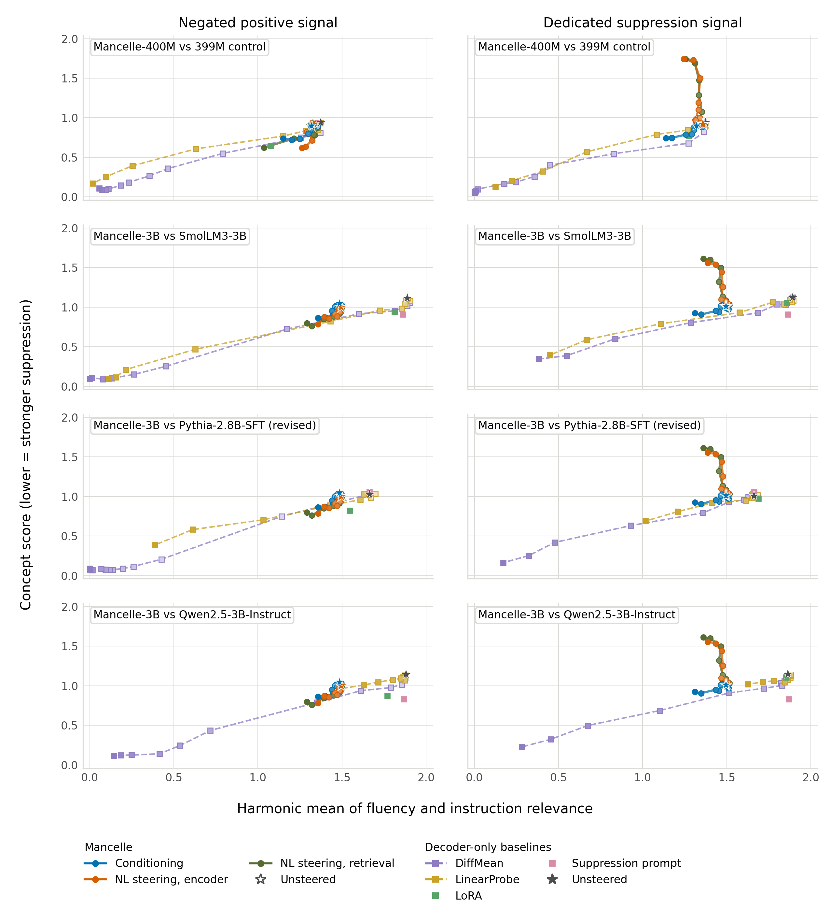

Steering language models with sparse features.
Mancelle is an encoder–decoder language model that learns to use sparse autoencoder features as conditioning signals. During generation, changing those features changes the signal available to the model.
Approach
During training, a sparse autoencoder supplies features for text segments. A bidirectional feature encoder processes those activations, and the language decoder attends to the encoded features alongside its token context.
At inference, Mancelle can condition on its own predicted features or use natural-language steering via retrieval or a feature encoder. The public 3B checkpoint is the revised supervised fine-tuned model at step 1120.
Evaluations
We measure concept presence, instruction relevance, and fluency across steering settings. The release includes ChatCORE, clean steering, negative steering, and robustness evaluations, with figure inputs and reproduction scripts.
The negative-steering figure compares concept suppression with response quality across two suppression signals. Its quality axis is the harmonic mean of fluency and instruction relevance.
Results and reproduction files